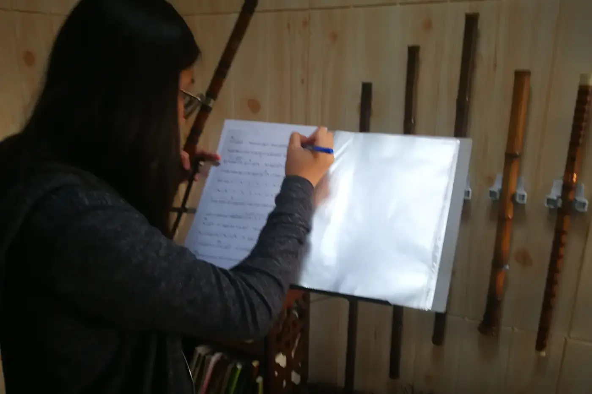
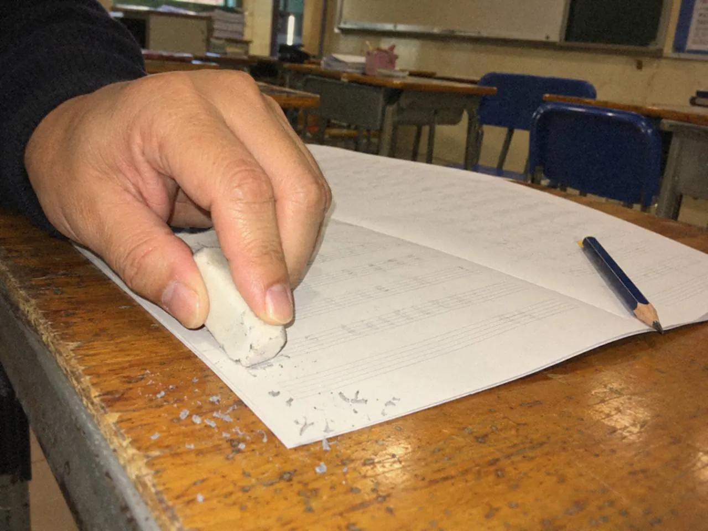
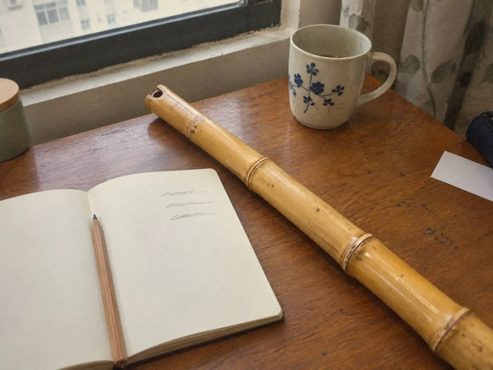

練習日誌只要記三件事：練哪裏、用了甚麼方法、結果如何。譜上的鉛筆記號也一樣，短、具體，寫在難點之前。兩者的用處相同，都是讓下次知道由哪裏開始。

練習簿上每天都有時間，過了一個月，卻看不出聲音改變了甚麼。
日誌不用計分
若每天像成績表，很快便不想打開。它可以只是替明天的自己留一張便條，不必每天評分。筆記清楚而短就好，太漂亮的反而維持不了。
別把每個錯音都抄下。選最影響演奏的一個問題，記清位置和現象，其餘留在樂譜上，不要讓筆記比練習更花時間。
當天選擇休息或縮短時間，也記下原因。日誌反映的是生活，用不着逼自己每天填同一個數字。能持續的安排，比完美紀錄實際。
每週回看一次就夠。找出重複出現的問題，看看是否一直用同一方法卻沒有變化，再把其中一項帶到課堂，請老師一起調整。診斷不用學生獨力承擔，日誌只是幫助溝通和判斷。
問題不再出現，也替它留個記號。進步容易被下一首難曲遮住，回看才發現自己走過一段路。
鉛筆在譜上寫甚麼？
樂譜越寫越滿，眼睛反而找不到最重要的提醒。好的註記短而清楚，對應一個實際動作。
符號先用少量而一致的幾種，例如換氣、注意臨時記號、段落起點。符號越多越要解碼，初學時三四種已足夠，意思要和老師相同。
位置比內容更容易出錯。提醒放在錯音之後，演奏時已經來不及，要放在難點前方，讓視線能預早發現。也別太靠近音符，遮住原來記譜。
與其寫「小心」，不如寫「先聽兩拍」「留氣到句尾」，或標出具體的升降音。提醒要能轉成行動，否則只是加深緊張。
已經掌握的可以擦掉。動作穩定了，試着減少提示，重新直接閱讀音樂。舊記號全部留着，重要的部分便淹沒在過去的問題裏。

不同版本或合奏排練的註記，用日期或少量文字區分，避免互相衝突。
一則有用的記錄是怎樣的？
沒有記錄，很難知道問題是否重複出現。一頁日誌可以只有三欄或三行：
- 位置：哪一小節、哪個樂句。
- 方法：具體試過甚麼。
- 結果：下次要保留或再改甚麼。
「第八小節，先拍節奏再吹，慢速時已能跟穩」三樣齊備。「第六小節先拍節奏，慢速時不再搶拍」也比「練了半小時」容易接續。
只寫「不好」「再努力」「今天狀態差」，下次很難知道由哪裏做起，除非加上具體原因和安排。
一個方法有兩種結果，就分開記。例如長笛先唱後吹能改善換氣，卻仍未解決第二拍的換指，便寫成兩件事。
每週挑一項重複問題，連同短錄音帶回課堂；也保留一項已能穩定做到的內容，作為進步的證據。
不要只寫「練了半小時」
分鐘數記錄的是忙碌，判斷才幫到下次。洞簫筆記可以換一種三行：今天聽見的問題、試過的做法、下次想再確認的地方。

不用為每次練習寫長篇感想。一句「第二個長音比第一個容易出聲」，已比「音色不太好」具體，下次便知道要比較甚麼。
練樂曲時，寫清哪一小節、哪個音或哪一個換氣位。沒有小節編號，可以用樂句開頭的幾個音作記號，翻開譜便能回到問題附近。
方法也要寫清楚，例如「先唱後吹」「把四拍縮成兩拍」，別只寫「慢練」。不同做法有不同結果，累積下來會看出哪些較適合自己。
一星期後選一條舊記錄，再吹同一段比較。仍然卡住，把原來的錄音和筆記一起帶到課堂，老師便清楚你在家中做了甚麼。
別讓簿子變成錯誤清單。有時最重要的變化，是不用用力找聲音，或休息後更容易重新開始。這些細小經驗沒有留下來，很快會被下一個難題蓋過。
常見問題
練習日誌要每天寫嗎？
練了就寫一兩行，休息的日子記一句原因也可以。不必每天寫得長，每週回看一次就好。
譜上要標多少種記號？
初學時三四種已足夠，例如換氣、臨時記號、段落起點，意思與老師一致。動作穩定了便擦掉。
日誌要交給老師看嗎？
不用交全部。挑一項重複出現的問題，連同短錄音帶回課堂，老師便知道你在家試過甚麼。
今天練完，用三行寫下位置、方法和結果，再在譜上難點之前留一個記號。錄音怎樣配合，可以讀錄音回聽：各樂器怎樣聽；要帶回課堂的問題怎樣說，看選曲、找問題與問老師。